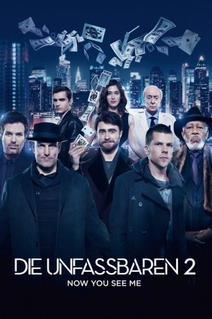

#5056 Die Unfassbaren 2
Alternativ: Now You See Me 2
 
 IMDB-Wertung: 6.5 / 10
IMDB-Wertung: 6.5 / 10  Metascore: 0
Metascore: 0 
Es ist ein Jahr her, seit die „Vier Reiter“ das FBI überlistet und die Herzen der Zuschauer mit ihrer magischen Vorstellung á la Robin Hood im Sturm erobert haben. Für die Zauberer J. Daniel Atlas, Merritt McKinney, Jack Wilder und Neuzugang Lula geht es nun erneut auf die Bühne. Mit einem neuen Akt wollen sie die fragwürdigen Praktiken eines Technik-Magnates aufdecken. Hinter dem Coup steckt Walter Mabry. Das technisch versierte Wunderkind spielt jedoch ein doppeltes Spiel und hat dabei nur Schlechtes für die Illusionisten im Sinn. Der spektakulärste Raubüberfall der Geschichte soll nicht nur den Ruf der Magier, sondern auch ihr Leben zerstören. Die Reiter müssen schnell selbst die Fäden in die Hand nehmen, ihren bisher außergewöhnlichsten Trick inszenieren und damit die Täuschung entlarven.
Jahr: 2016
Dauer: 129 Minuten
FSK: 12
Land: USA Studio: Summit EntertainmentTonspuren: DTS - ,
Untertitel:
Auflösung: 1080p (1920x800) Größe: 10649 MB
Genre: Action, Thriller, Komödie, Abenteuer, Krimi, Mystery
Regisseur: Jon M. Chu
Drehbuch: Ilya Naishuller
Soundtrack:
Darsteller:
 Jesse Eisenberg als J. Daniel Atlas
Jesse Eisenberg als J. Daniel Atlas Mark Ruffalo als Dylan Rhodes
Mark Ruffalo als Dylan Rhodes Woody Harrelson als Merritt McKinney
Woody Harrelson als Merritt McKinney Dave Franco als Jack Wilder
Dave Franco als Jack Wilder Daniel Radcliffe als Walter Mabry
Daniel Radcliffe als Walter Mabry Lizzy Caplan als Lula
Lizzy Caplan als Lula Jay Chou als Li
Jay Chou als Li Sanaa Lathan als Deputy Director Natalie Austin
Sanaa Lathan als Deputy Director Natalie Austin Michael Caine als Arthur Tressler
Michael Caine als Arthur Tressler Morgan Freeman als Thaddeus Bradley
Morgan Freeman als Thaddeus Bradley David Warshofsky als Agent Cowan
David Warshofsky als Agent Cowan Tsai Chin als Bu Bu
Tsai Chin als Bu Bu Richard Laing als Lionel Shrike
Richard Laing als Lionel Shrike Henry Lloyd-Hughes als Allen Scott-Frank
Henry Lloyd-Hughes als Allen Scott-Frank- Brick Patrick als Chase McKinney
- Ben Lamb als Owen Case
 Aaron Ly als Head Security Guard
Aaron Ly als Head Security Guard- Jem Wilner als Agent Dore
- James Richard Marshall als Agent UK
- Alexa Brown als Agent 2 UK
 Jim Pirri als Eye Voice
Jim Pirri als Eye Voice- Varada Sethu als Tressler Assistant
 Justine Wachsberger als Zoey Taylor
Justine Wachsberger als Zoey Taylor- Dino Fetscher als Octa Guard
- Martin Delaney als Bo Walsh
- Michael Cooke als Jack Stooge 1A
- Bruce Chong als Science Lab Guard 2
- Missy Malek als Case Assistant
 Krystal Ellsworth als Casino Dancer
Krystal Ellsworth als Casino Dancer- Jessica Lee Keller als Casino Dancer
 Luis Rosado als Casino Dancer
Luis Rosado als Casino Dancer- Savannah Guthrie als Savannah Guthrie
- Emmanuel Akwafo als Student , uncredited
 Jozef Aoki als Walter's Guard , uncredited
Jozef Aoki als Walter's Guard , uncredited- Mairead Armstrong als New Years Eve reveller , uncredited
 Lasco Atkins als 80s Pedestrian , uncredited
Lasco Atkins als 80s Pedestrian , uncredited- Alphonso Austin als Horseman Fan , uncredited
 David Olawale Ayinde als Business Guest , uncredited
David Olawale Ayinde als Business Guest , uncredited Gintare Beinoraviciute als Audience Member , uncredited
Gintare Beinoraviciute als Audience Member , uncredited Annarie Boor als New Years Eve Crowd , uncredited
Annarie Boor als New Years Eve Crowd , uncredited Bern Collaco als New Year's Eve Reveller , uncredited
Bern Collaco als New Year's Eve Reveller , uncredited Alexander Cooper als FBI Agent , uncredited
Alexander Cooper als FBI Agent , uncredited- Amber Elizabeth als Green Umbrella Girl , uncredited
- Alexandra Fraser als Magician Assistant , uncredited
- Jesse Michael Fullington als FBI Agent , uncredited
- Alexander Furno als NYE Party Boy , uncredited
 Kevin Fyfe als FBI Agent , uncredited
Kevin Fyfe als FBI Agent , uncredited- Gemma George als New Years Eve Reveller , uncredited
 Claire Greasley als New Year's Eve Reveller , uncredited
Claire Greasley als New Year's Eve Reveller , uncredited- Jane Hardcastle als Tressler's Assistant , uncredited
Datei: X:\2-Dilogie(N-Z)\Unfassbaren\Unfassbaren 2, Die (2016, FSK12, 1920x800).mkv seit 22.12.2016
Festplatte: HD Collection-2(A-Z)-3(A-M)
 Alle Filme aus Gruppe '2-Dilogie(N-Z)\Unfassbaren'
Alle Filme aus Gruppe '2-Dilogie(N-Z)\Unfassbaren'